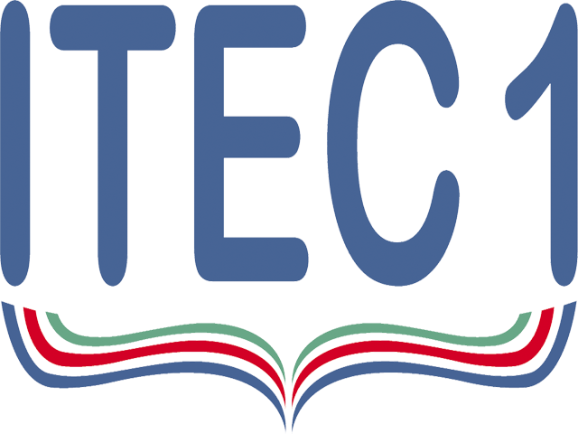

Comprometidos con la educación permanente en nuestras tres modalidades: Secundario de adultos, Talleres de formación profesional, y Carreras de Nivel Superior, en consonancia con los avances tecnológicos, y reconociendo la importancia y beneficios con que cuenta internet, el ITEC Nº1 les da la bienvenida a su sitio. A través del mismo, buscamos facilitar a los usuarios el acceso a la información actualizada sobre nuestra institución, y de este modo seguir trabajando de manera conjunta con toda la comunidad.
En Octubre de 2002, se llevó a cabo la presentación de la Fundamentación y justificación de la propuesta de creación del ITEC Nº1. En la misma se leía:
Nuestro país, de tradición colonial que posee una industrialización parcial, no se ha caracterizado por su capacidad de formar buenos técnicos de nivel intermedio en cantidad, diversidad, y calidad, como sí lo han hecho otros países como Canadá, EEUU, Alemania, Francia, que pueden ser modelos en este aspecto. Ello se debe a diversos motivos de índole principalmente cultural, ya que en general las clases de menores recursos no poseen un acceso sencillo a los mismos, y las clases medias pretenden para sus hijos formación de grado o postgrado.Por eso es frecuente encontrar en las empresas técnicos idóneos, o licenciados, o profesionales realizando tareas técnicas de nivel intermedio.Esta deficiencia se podría solucionar mejorando la educación técnica de nivel secundario o creando carreras cortas, terciarios con una formación y capacitación acorde a las necesidades requeridas por el nuevo mercado productivo.El Instituto Tecnológico Yacyretá desarrollará la segunda opción orientada a una formación profesional sólida y flexible que responda a las necesidades y demandas.